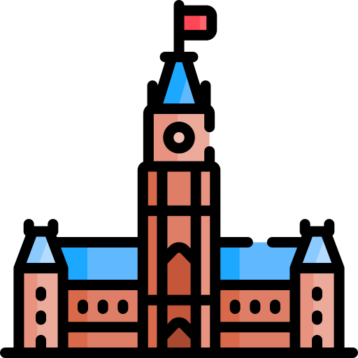

Our paper "Obfuscated Clone Search in JavaScript based on Reinforcement Subsequence Learning" was accepted by TOSEM. Congratulations, Leo and co-authors!
I am honored to serve as co-chair for the SETA (Symposium on Software
Engineering Technologies & Applications) track of the 49th IEEE Computer Society Signature
Conference on Computers, Software, and Applications (COMPSAC 2025). Please consider
submit your work to COMPSAC'25. We are looking forward to seeing you July 2025
in Toronto
 .
.
Our paper "ZS4C: Zero-Shot Synthesis of Compilable Code for Incomplete Code Snippets using LLMs" was accepted by TOSEM. Congratulations, co-authors!
Our NSERC Alliance-Mitacs project on "Pragmatic Automated Code Transformation Leveraging Large Language Models" has been funded. We will be collaborating with our industry partner Ross Video on this exciting project.
Our paper "An Empirical Study on Developers Shared Conversations with ChatGPT in GitHub Pull Requests and Issues" was accepted by the Journal First Track of the 47th ACM/IEEE International Conference on Software Engineering (ICSE 2025). Huizi will present the work at ICSE 2025 in Ottawa .
I am honored to serve on the program committee for SANER2024 (International Conference on Software Analysis, Evolution and Reengineering). SANER is the premier event on the theory and practice of recovering information from existing software and systems. We welcome your contributions via the main website of SANER 2024 .
I am honored to serve on the program committee for FSE2024. Please consider submitting your exciting work to of FSE 2024 .
Our paper titled "Analyzing Gamer Complaints in Reviews of Cross-Platform Video Games on Steam" has been accepted by the 19th IEEE Conference on Games (CoG 2023). Congratulations to former RISE member Hanwen and co-authors!
I am honored to serve on the IEEE Conference Activities Committee (CAC). The committee reports to the IEEE Technical and Conference Activities Board. More information about the IEEE technical & conference activities board can be found here.
Our paper titled "An Empirical Study on GitHub Pull Requests Reactions" has been accepted by ACM Transactions on Software Engineering and Methodology (TOSEM) journal. Congratulations to co-authors!
I will give a talk on SEMLA (symposium on Software Engineering for Machine Learning Applications) 2023. SAMLA'23 will be host in Montreal on June 9 and 10, with a trending topic, i.e., Operationalizing Trustworthy AI. More information about the program can be found here. Stay tuned and welcome to participate!
Our paper titled "Understanding the Time to First Response in GitHub Pull Requests" has been accepted by the 20th International Conference on Mining Software Repositories (MSR 2023). Congratulations to Amit and Marcos for getting their first paper!
I will be serving on the program committee of the Ideas, Visions and Relfections track of the 2023 edition of the ACM Joint European Software Engineering Conference and Symposium on the Foundations of Software Engineering (ESEC/FSE). Welcome everyone for contributions!
Our paper titled "Automated Self-Admitted Technique Debt Tracking at Commit-Level: A Language-independent Approach" has been accepted by the 6th International Conference on Technical Debt (TechDebt 2023). Congratulations to Sadegh.
Our paper "SCS-Gan: Learning Functionality-Agnostic Stylometric Representations for Source Code Authorship Verification", which is originally published at the Transactions of Software Engineering (TSE) journal has been accepted by the journal-first track of the 45th International Conference on Software Engineering (ICSE)! Congratulations to co-authors! Looking forward to seeing SE researchers at ICSE23 and share this work in May. paper!